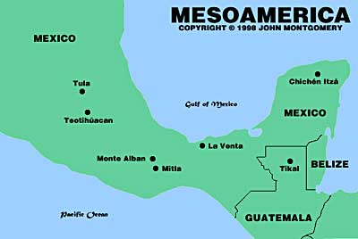

The Mayan Empire vs. The Olmec Empire: Comparing Two Ancient Civilizations of the Americas
By: Lila
Introduction
The ancient civilizations of the Americas hold a special place in the history of the world, and the Mayan and Olmec empires are two of the most prominent. Despite appearing centuries apart, these civilizations share many similarities while maintaining their unique characteristics. This website offers a deep dive into both empires, providing an immersive experience that will transport you back in time, exploring their respective rise and fall as well as their contributions to the world.
Previous subheadings:
- Understanding the Olmec Empire's Foundational Importance in the Americas
- Decoding the Mayan Empire's Complex Calendar System
As you explore this website, you will gain invaluable insights into the world of the Olmec civilization, believed by many to be the 'mother culture' of the Americas. You will discover how the Olmec influenced other civilizations that came after them, such as the Mayans. From their impressive stone carvings to their agricultural innovations, we will take you on a journey to explore the enduring legacy of the Olmec civilization.
At the same time, we will dive deep into the world of the Mayan Empire, known for its remarkable advancements in architecture, mathematics, and astronomy, among other fields. We will explore the stunning ruins of their cities and temples, each structure a testament to the Mayan's innovative building practices and remarkable understanding of science.
Whether you are an avid history buff or simply someone curious about the rich tapestry of the Americas, this website has something to offer. Each section will offer fascinating insights and facts that will deepen your understanding of the Mayan and Olmec civilizations. Prepare to be amazed by the astounding feats of these ancient empires and be inspired by their legacies that have continued to live on for centuries.
ad space
Geography and Location
The Mayan and Olmec Empires were two of the most impressive ancient civilizations of the Americas. They both existed before the arrival of the Europeans and left behind an immense legacy that continues to fascinate scholars and enthusiasts alike. One of the most significant factors that shaped their histories was their geographical location. In this section, we will explore the geographical differences and similarities between the Mayan and Olmec Empires.
The Olmec Empire was one of the earliest Mesoamerican civilizations, and its heartland was located on the Gulf Coast of Mexico. This region is known for its tropical forests, high humidity, and volatile climate, characterized by hurricanes and floods. Despite these challenges, the Olmec people were able to harness the rich soils, abundant water resources, and unique climate to develop one of the most sophisticated societies of their time. They built complex hydraulic systems to manage floodwaters and transform swamplands into fertile agricultural fields. They also traded extensively with their neighbors, especially the Maya, to acquire exotic goods such as jade and obsidian.
The Mayan Empire, on the other hand, was a much later civilization that emerged in the Yucatan Peninsula, extending from present-day Mexico to Guatemala, Belize, and Honduras. This region is known for its tropical rainforests, limestone plateaus, and vast coastal plains. The Mayans were able to exploit the diverse landscapes and ecosystems by developing sophisticated irrigation systems, soil conservation techniques, and terracing practices. They also built extensive road networks and ports to facilitate trade and communication between their numerous city-states.
In conclusion, both the Mayan and Olmec Empires were located in highly complex and diverse landscapes that required advanced ecological knowledge, engineering skills, and social organization to thrive. By understanding their geographical context, we can appreciate better the ingenuity and resilience of these ancient civilizations.
ad space
Culture and Society
The Mayan and Olmec civilizations stand out as pre-Columbian societies that thrived in the Americas, each with their own unique culture and society that shaped the course of history in their respective regions. In this section, we explore the intricacies of the Mayan and Olmec social structures, religion, economy, and daily life.
Culture and society were central to both empires, with the Mayans valuing knowledge and education, while the Olmecs displayed a deep reverence for spiritual and religious practices. The Mayans were renowned for their writing system, astronomy, and mathematics, with their intense focus on learning resulting in an advanced understanding of science and medicine. In contrast, the Olmecs were known for their colossal basalt stone sculptures, which depict a range of natural and human forms, and their adeptness at creating sophisticated irrigation systems for agriculture.
The Mayans were a hierarchical society, with a ruling elite who wielded considerable power over their subjects. They had a complex religious system, with various gods and goddesses, and a strong belief in the interconnectedness of the universe. The Olmecs also had a hierarchical society, with priests occupying positions of authority and power, presiding over religious rituals and ceremonies. They believed in a cyclical view of time, with the universe operating on a continuous loop of creation and destruction.
In conclusion, exploring the cultural and societal differences between the Mayan and Olmec empires is a fascinating journey into the complexities of these ancient civilizations. By understanding how these societies viewed the world and their place in it, we can gain a deeper appreciation for their achievements and legacy, and how they continue to influence our lives today.
ad space
Warfare and Technology
The Mayan Empire and the Olmec Empire flourished in Mesoamerica during different time periods, with the latter being succeeded by the former. Among the fascinating aspects of these ancient civilizations was their approach to warfare and technology, which provides unparalleled insights into their strategic thinking, societal organization, and cultural values. From the use of obsidian weapons to the art of human sacrifice, the Mayans and the Olmecs left behind a legacy that is still being studied and debated today.
One of the remarkable features of the Mayan Empire was its ability to create sophisticated weapons that could pierce obsidian, a type of volcanic glass that was abundant in Mesoamerica. The Mayans also employed strategies such as ambushes, raids, and skirmishes to conquer neighboring territories and defend themselves against external threats. One of the most famous conflicts involving the Mayans was the 100-year war between the city-states of Tikal and Calakmul, which ended in the former's victory.
The Olmec Empire, on the other hand, is known more for its religious and cultural achievements, such as the construction of colossal stone heads and the development of a hieroglyphic writing system. However, the Olmecs were not immune to warfare, as evidenced by the discovery of fortifications and weapons like the atl atl, a spear-throwing device. The Olmecs also seem to have practiced human sacrifice, although its exact purpose and frequency are still debated.
Despite their differences, both the Mayan and the Olmec civilizations relied on technology to advance their military and cultural agendas. From the construction of temples and palaces to the use of canals and terraces for agriculture, these ancient societies were surprisingly sophisticated for their time. The study of their warfare and technology sheds light on why they rose and fell, and how their legacies continue to shape our understanding of pre-Columbian America.
ad space
End of the Empires
Throughout history, great empires have come and gone. The Mayan and Olmec Empires were two of the most prominent civilizations to emerge in the ancient Americas. The Mayans, known for their incredible architecture, advanced writing system, and vast trade networks operated from 2000 BC to 1500 AD. Whereas the Olmecs, recognized for their impressive colossal head sculptures, began in 1400 BC and lasted until 400 BC. These civilizations shared many similarities, but their differences were equally crucial. Their terrains, beliefs, rituals, and downfall are contributions to their distinctive legacies.
The end of the Mayan Empire was a protracted process that left a lasting impact on the region. Mayans relied on their agriculture, and as they grew, their need for resources increased, leading to extensive logging and the extensive expansion of farms. As a result, soil erosion, deforestation, and droughts took over. Political unrest, warfare, and economic instability also contributed to their decline. Some historians say it was the combination of these factors that led to the downfall of the empire, while others believe that climate change played a more significant role in their collapse.
In contrast, little is known about the end of the Olmec Empire. Some believe that it was due to internal conflict, natural disasters, or changes in trade routes that caused the gradual decline of the empire. Moreover, with the Olmec's successor, the people of the Gulf Coast and Mesoamerican regions shared this idea of the Olmec's culture and religion, contributing to their legacy.
The end of the Mayan and Olmec Empires demonstrates the consequences of environmental degradation, political instability, and an over-reliance on agriculture. Even though both empires faced different fates, their legacies are significant in shaping the Americas today, influencing cultural and linguistic advancements. The discussion around their legacy continues to pique archeologists, historians, and travelers' interest as we delve deeper and unravel the secrets behind their incredible achievements, their sudden decline, and how they continue to impact the world today.
ad space
Conclusion
As we come to the conclusion of our examination of the Mayan Empire and the Olmec Empire, one thing is clear: both civilizations made significant contributions to the Americas that continue to impact the world today.
The Olmec Empire, despite existing much earlier than the Maya, established many of the architectural and stylistic traditions that defined Mesoamerican art and culture. They also built the first cities, and the enormous stone heads that they created still inspire awe and speculation centuries later. On the other hand, the Mayan Empire was a master of astronomy, mathematics, and agriculture, and created some of the most majestic architectural feats to be seen in the Americas, including the Great Pyramid of Chichen Itza.
However, while both civilizations differed in many ways, they shared an inherent curiosity and desire to explore the world around them. This drove them to create remarkable feats of engineering, art, and culture that continue to captivate us even in the modern age.
In addition, the Maya and the Olmec have left behind many unanswered questions that continue to fascinate researchers and historians today. For instance, how did the Olmec manage to create such elaborate and detailed art on such a large scale, and what prompted the fall of the mighty Mayan Empire?
As we conclude our study of these two dynamic civilizations, let us remember their contributions and legacies, and take inspiration from their curiosity, innovation, and unrelenting quest for knowledge that remain as relevant today as they were centuries ago.
ad space